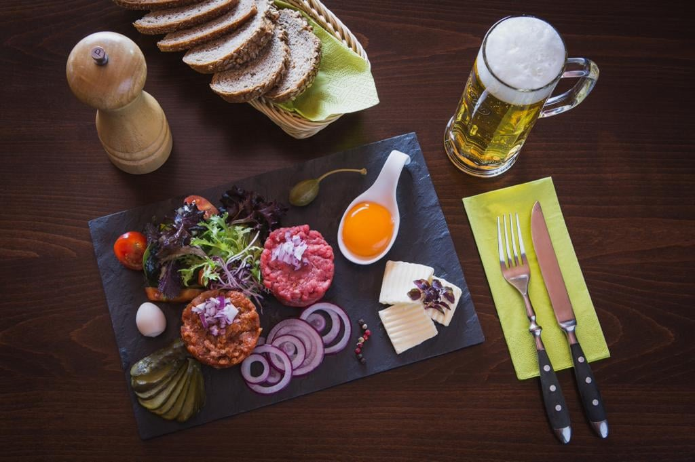

Berufserfahrung
-
Chef de Partie im Hotel Silberhorn 4 Sterne
(Saisonweise in der Schweiz)
05/2022 - 10/2022 -
Koch im Hotel Silberhorn 4 Sterne
(Saisonweise in der Schweiz)
12/2020 - 03/2022 -
Koch im Gasthof Pesterwitz
08/2017 - 11/2020
Bildungsweg
-
Berufsausbildung zum Koch im Altmarktkeller Dresden
09/2014 - 08/2017 -
AWO Jugendbereichshilfe
(Praktikum, Bereich Küche)
01/2014 - 08/2014 -
30. Oberschule Dresden
08/2009 - 07/20013 -
15. Oberschule Dresden
08/2007 - 06/2009

Sprachen
Deutsch 99%
Englisch 80%
Persönliche Angaben
- Geburtstag: 10.02.1996
- Geburtsort: Dresden
- Nationalität: Deutsch
- Familienstand: Ledig
Persönliche Stärken
- Teamfähig
- Belastbar
- Flexibel
- Kreativ
- Selbstständig